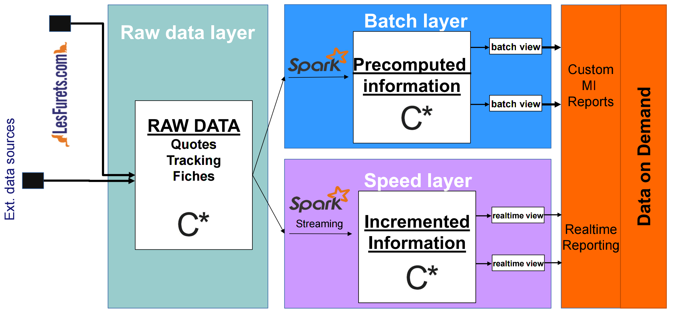

First independent insurance comparison website in France, launched in September 2012
A single website to compare hundreds of offers (car, motorcycle, housing, health, loan insurance)
3M quotes/year, 40% market share, 4M customers
22 Developers, 2 DevOps, 4 Architects
450k lines of code, 60k unit tests, 150 selenium tests
1 release per day

Apache Spark is a fast and general-purpose cluster computing system
It provides high-level APIs in Java, Scala, Python and R, and an optimized engine that supports general execution graphs
It also supports a rich set of higher-level tools including SparkSQL for SQL and structured data processing, MLlib for machine learning, GraphX for graph processing, and Spark Streaming for micro-batching

Easy to start with: Spark in a Scala notebook

In the notebook you can
Well it's pretty cool ...
... and we have lots of usage for it
... but we realise that we don't know how to write Scala

... and a notebook is fine for prototyping, but it is not industrial
... we are also currently migrating to lambda architecture
Add the dependency in Maven
<dependency>
<groupId>org.apache.spark</groupId>
<artifactId>spark-core_2.11</artifactId>
<version>2.0.2</version>
</dependency>The 2.11 in the artifactId means that Spark was compiled with Scala 2.11 (your Spark cluster will need to be started with same version to avoid serialization problems between the executors)
Also add the DataFrame API (aptly placed in the sql package)
<dependency>
<groupId>org.apache.spark</groupId>
<artifactId>spark-sql_2.11</artifactId>
<version>2.0.2</version>
</dependency>
Pretty much all of those elements are imported with a maven dependency
The entry point is SparkSession
private static SparkSession spark = SparkSession.builder()
.appName("LesFurets.com - Spark")
.master("local[*]")
.getOrCreate();
public static void main(String[] args) {
spark.emptyDataFrame().show();
}We call the machine that instantiates the SparkSession the driver, it contains the context and communicates with the cluster manager to launch the executions on the workers (or executors)

Apache Spark is a clustered engine that can start in 2 modes: local or standalone / cluster
That means the jar containing your program is send by the cluster manager (Standalone, Apache Mesos, Hadoop YARN) to the workers and the datas are serialized between the JVMs
Implying : the workers don't have direct access to the driver's variables unless you explicitly broadcast them
Shall we live code a simple example? On a ferret dataset find the mean price, by product, for an insurer
DEMO TIME!com.lesfurets.spark.examples.PricesRun
spark.udf()
.register("readableProduct",
(UDF1<String, String>) ProductMapper::english,
StringType);Dataset<Row> averagePrice = prices
.filter((FilterFunction<Row>) value ->
value.<String>getAs("insurer")
.equals("COOL insurer"))
.groupBy("product")
.agg(avg("price").as("average"))
.withColumn("readableProduct",
callUDF("readableProduct", col("product")))
.orderBy(desc("average"));
averagePrice.show();What is executed on the worker? And on the driver?
spark
.read().csv(PATH)
.filter((FilterFunction<Row>) value ->
value.<String>getAs("insurer")
.equals("COOL insurer"))
.groupBy("product")
.agg(avg("price").as("average"))
.withColumn("readableProduct",
callUDF("readableProduct", col("product")))
.orderBy(desc("average"))
.show();We call averagePrime.show() a terminal operation that will launch the calculation, the other operations are lazy (think Java 8 streams)
Between each step Spark might shuffle data between the workers
You can see data shuffling and execution plan in Spark UI

But what is that class called Dataset (also called DataFrame) we saw earlier?
A DataFrame is a typed and named column oriented distributed collection of data
From our SparkSession we get a Dataset<Row> (that is an untyped DataSet, also called DataFrame).
// Read a csv file with schema inference
Dataset<Row> data = spark.read()
.option("inferSchema", true)
.csv("data.csv");DataFrame have a schema, even if their type argument is Row like Dataset<Row>
data.printSchema();root
|-- uid: string (nullable = true)
|-- email_hash: integer (nullable = true)
|-- date: timestamp (nullable = true)
|-- heure: string (nullable = true)
|-- module: string (nullable = true)If you are using SparkSQL, you are also using DataFrame under the hood, and in both cases the execution plans are optimized by Catalyst

What about DataSet<Something>? You can get that from an untyped DataSet
Take Question a Java Bean that corresponds to a LesFurets form question
// Convert Dataset<Row> to Dataset<Question>
Dataset<Question> domainData = data
.as(Encoders.bean(Question.class))The DataSet is now typed with Question, on top of his existing schema
Spark 2.0 onwards: SparkSQL, DataFrames and DataSets represent the same component

Resilient Distributed Datasets (RDDs) are Spark's internal plumbing: no need to use them, unless you need to interact with legacy libraries or use low level functionalities (RDD#partitionBy)
// Get the dataset's underlying RDD
RDD<Question> rdd = domainData.rdd();
// RDD's Java API
JavaRDD<Question> javaRDD = domainData.javaRDD();The interface between DataFrame and RDD is simple
Dataset<Row> dataFrame = spark.createDataFrame(rdd, structType);Catalyst optimises the program's execution plan, viewable with: Dataset#explain
The generated code is optimized in many ways, this is the result of the Tungsten project (whole-stage codegen)

What if we test our code?
DEMO TIME!com.lesfurets.spark.examples.PricesRunTest
@BeforeEach
public void before() {
List<Row> rows = Arrays.asList(
RowFactory.create("F1", 50d, "COOL insurer"),
RowFactory.create("F2", 100d, "COOL insurer"),
RowFactory.create("F2", 70d, "COOL insurer"));
StructField product = new StructField("product", IntegerType, ...);
StructField price = new StructField("price", DoubleType,...);
StructField insurer = new StructField("insurer", StringType,...);
StructType structType = new StructType(
new StructField[]{ product, price, insurer });
prices = spark.createDataFrame(rows, structType);
}@Test
public void should_average_price_return_correct_average() {
Dataset<Row> averagePrice = PricesRun.averagePrice(prices);
averagePrice.foreach((ForeachFunction<Row>) row
-> assertNotNull(row.getAs("readableProduct")));
assertEquals(2, averagePrice.count());
assertEquals(1, averagePrice.first().getAs("product"));
assertEquals("F2", averagePrice.first().getAs("readableProduct"));
assertEquals(75, (double) averagePrice.first().<Double>getAs("average"));
}Testing guidelines:
@SparkTest JUnit5 extension)Is the Java API limited compared to Scala?
... yes, a little
- We'd like a Java notebook with a REPL (we can still prototype with Scala since it's the same API)
- The Java API is harder to learn since there's less documentation on it's usage (hence this talk)
- It's easy to do very verbose implementations
- Types... types everywhere (e.g. Encoders.STRING())
For example my first word count implementation...
Dataset<Row> wordCount = lines
.flatMap((FlatMapFunction<Row, String>) row -> {
String[] words = row.<String>getAs("line").split(" ");
return asList(words).iterator();
}, STRING())
.map((MapFunction<String, Tuple2<String, Integer>>) word ->
new Tuple2<>(word, 1), tuple(STRING(), INT()))
.toDF("word", "count")
.groupBy("word")
.sum("count")
.orderBy(desc("sum(count)"))... I'm using flapMap and map with lambda as arguments (very useful but a bit verbose)
... that same word count can be written more concisely by knowing the API
Dataset<Row> wordCount = lines
.select(split(col("lines"), " ").alias("words"))
.select(explode(col("words")).alias("word"))
.groupBy("word")
.count()
.orderBy(desc("count"));... even if it feels a bit magical

Best tip of the month:
Most functions for select, map, flapMap, reduce, filter, etc., that you'll need are in org.apache.spark.sql.functions (like split and explode in previous slide)
Before writing a function by hand, check in that (non-documented) package
Unfortunately, Java 8 lambda usage has shortcomings, we need to cast them
For example, to get the last element in a group:
Dataset<Tuple2<String, QuoteJoin>> price =
quotes
.groupByKey((MapFunction<QuoteJoin, String>)
QuoteJoin::getUid, STRING())
.reduceGroups((ReduceFunction<QuoteJoin>) (v1, v2) ->
v1.getSnapshotId()
.compareTo(v2.getSnapshotId()) > 0 ? v1 : v2);However, these methods take Single Abstract Method interfaces (SAM Interfaces) as parameters, but can't be called directly because they are overloaded for the Scala calls. Last example should read:
Dataset<Tuple2<String, QuoteJoin>> price =
quotes
.groupByKey(QuoteJoin::getUid, STRING())
.reduceGroups((v1, v2) -> v1.getSnapshotId()
.compareTo(v2.getSnapshotId()) > 0 ? v1 : v2);This is a know problem that comes from bytecode compatibility between Scala and Java that is resolved in Scala 2.12. Spark's support of that Scala version is not trivial, see discussions SPARK-14220 and SPARK-14643.
Type serializer (org.apache.spark.sql.Encoders.*) are inferred in Scala, explicit in Java
Dataset<Tuple2<String, TarificationJoin>> tupleTarif =
tarification
.groupByKey((MapFunction<TarificationJoin, String>)
TarificationJoin::getOffreUid, STRING())
.reduceGroups((ReduceFunction<TarificationJoin>) (v1, v2) ->
v1.getSnapshotId()
.compareTo(v2.getSnapshotId()) > 0 ? v1 : v2);What we didn't talk about
Tuple oriented, which is difficult to use (but it can be avoided with the DataFrame API)Does Apache Spark fit in a Java ecosystem? Yes! Because
Java API is coolest API

- Slides and code (with JUnit4 et JUnit5 Spark annotations)
https://github.com/lesfurets/lesfurets-conference
- (french) Articles about Spark's Java API and unit testing